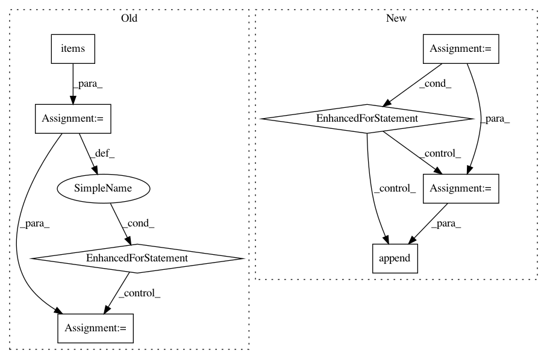

fe41a42ff872debbc18f465f003a314f5ad19d29,nala/utils/tagger.py,TmVarTagger,generate_abstracts,#TmVarTagger#Any#,42
Before Change
exit()
for doc_id, doc in dataset.documents.items():
if doc_id in tm_var:
denotations = tm_var[doc_id]["denotations"]
text = tm_var[doc_id]["text"]
denotations = [text[d["span"]["begin"]:d["span"]["end"]] for d in denotations]
for part_id, part in doc.parts.items():
for ann in chain(part.annotations, part.predicted_annotations):
if ann.class_id == MUT_CLASS_ID and ann.text not in denotations:
ann.subclass = True
After Change
part = Part(text)
denotations = tm_var[doc_id]["denotations"]
annotations = []
for deno in denotations:
ann = Annotation(class_id="e_2", offset=int(deno["span"]["begin"]), text=text[deno["span"]["begin"]:deno["span"]["end"]]) // todo check whether right offsets (especially the last one)
annotations.append(ann)
// discussion should the annotations from tmvar go to predicted_annotations or annotations?
part.annotations = annotations
doc.parts["abstract"] = part
dataset.documents[doc_id] = doc
In pattern: SUPERPATTERN
Frequency: 3
Non-data size: 8
Instances
Project Name: Rostlab/nalaf
Commit Name: fe41a42ff872debbc18f465f003a314f5ad19d29
Time: 2015-09-20
Author: carsten.uhlig@gmail.com
File Name: nala/utils/tagger.py
Class Name: TmVarTagger
Method Name: generate_abstracts
Project Name: deepfakes/faceswap
Commit Name: bcf38b02cc7209d1baccd1302b5224f5faf2f00a
Time: 2021-01-31
Author: 36920800+torzdf@users.noreply.github.com
File Name: plugins/train/model/_base.py
Class Name: _Inference
Method Name: _make_inference_model
Project Name: dpressel/mead-baseline
Commit Name: 71bd73748b835de5ae20bdc90ce4321e47f4c2b2
Time: 2019-09-25
Author: dpressel@gmail.com
File Name: python/eight_mile/tf/layers.py
Class Name: EmbeddingsStack
Method Name: call